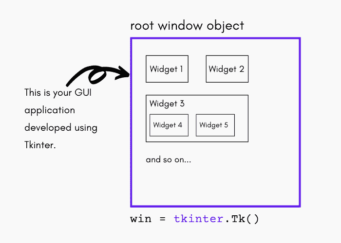
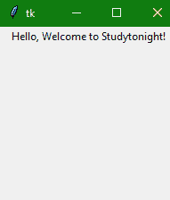

Tkinter 窗口、小部件和框架
原文：https://www.studytonight.com/tkinter/tkinter-windows-widgets-and-frames
在本教程中，我们将介绍 Tkinter 模块的基础知识，解释什么是 Tkinter 窗口、小部件和框架，它们是 Tkinter 中图形用户界面应用的构建模块。
Tkinter 窗口和小部件介绍
让我们深入一点，了解一些关于 Tkinter 模块及其工作原理的基础知识。

GUI 编程中的顶级窗口对象包含所有的小窗口对象，它们将成为完整 GUI 的一部分。
小窗口对象可以是文字标签、按钮、列表框等。，这些单独的小图形用户界面组件被称为小部件。
因此，拥有一个顶级窗口对象将充当一个容器，您可以在其中放置所有小部件。在 Python 中，您通常会使用以下代码这样做:
win = tkinter.Tk()通过调用
tkinter.Tk()返回的对象通常被称为根窗口。顶级窗口主要是单机作为你的应用的一部分，还有你的 GUI 可以有多个顶级窗口，但是其中只有一个应该是你的根窗口。
首先，你需要完整地设计你所有的小部件，然后添加真正的功能。
小部件可以是独立的也可以是容器。如果一个小部件包含其他小部件，它被认为是那些小部件的父部件。
类似地，如果一个小部件包含在另一个小部件中，它被称为父部件的子部件，**父部件是下一个直接的**封闭容器小部件。
小部件也有一些关联的行为，比如当按下按钮时，或者文本被填充到文本字段中，所以我们有事件附加到这些动作上。
小部件的行为生成事件，而 GUI 对事件的响应被称为回调 -因为他们“调用”一个函数只是为了处理发生的事件。
Tkinter 事件驱动处理
在 Tkinter 中，我们将窗口和小部件组合在一起，形成一个 GUI 应用。但是图形用户界面应用只是应用的前端。当最终用户使用这些小部件时，您可能希望执行一些代码逻辑。
每当对任何小部件执行操作时，都会生成一个事件，我们可以处理该事件来执行任何操作。
事件(小部件的行为)可以包括按下按钮、移动鼠标、点击回车键或回车键、获得或失去“焦点”等。
从开始到任何图形用户界面应用结束的整个事件系统是驱动它的因素，因此也被称为事件驱动处理。
让我们举一个简单的鼠标移动的例子:假设鼠标的指针正好位于您的图形用户界面应用顶部的某个地方。如果您将鼠标移动到应用的另一部分，则必须有某种东西使鼠标的移动被屏幕上的光标复制(在您的图形用户界面应用的顶部)。这些是“光标移动”事件，系统必须处理这些事件来描述您的光标在窗口中移动。在你将停止移动鼠标的时候，不再需要处理更多的事件，所以一切只是再次停留在屏幕上。
以下是一些基本定义，通过这些定义，您将能够理解 Tkinter 中的窗口、小部件和框架的概念。
Tkinter Windows
“窗口”一词在不同的上下文中有不同的含义，但一般来说“窗口”是指用户显示屏上的某个矩形区域，您可以通过它进行交互。
然后在 Tkinter 中出现了顶层窗口的概念。
顶层窗口
顶层窗口是在屏幕上独立存在的窗口。您可以使用桌面管理器的标准框架和控件来装饰顶层窗口。它通常可以在桌面上移动，如果你想的话也可以调整它的大小。
然后是小部件的概念。让我们试着去理解它。
Tkinter widgets
术语“小部件”是一个通用术语，指的是在图形用户界面中组成应用的构建块。
让我们列出核心小部件及其类别:
容器
在这个类别下，小部件是框架、标签框架、顶层和窗格窗口。
按钮
在按钮类别下，有按钮、单选按钮、复选按钮(复选框)和菜单按钮。
文本小部件
在文本小部件的类别下，有标签、消息和文本。
输入小部件
在这个类别下，小部件是缩放、滚动条、列表框、滑块、旋转框、条目(单行)、选项菜单、文本(多行)和画布(矢量和像素图形)。
现在让我们继续看 Tkinter 中的框架。
Tkinter 帧
框架基本上是一个矩形区域，可以包含其他小部件。在 Tkinter 中，有一个框架小部件，它是复杂布局的基本组织单位。它是一个小部件，没有自己的特殊样式或图形用户界面组件。它只是用来在复杂的图形用户界面布局的情况下容纳其他 Tkit 小部件。
注意: 这里需要注意的是，无论什么时候创建任何小部件，都会创建一个父子关系。举个例子，如果你在一个框架内放置一个按钮，这个框架小部件被称为按钮小部件的父部件。
Tkinter 基本示例
让我们举一个例子，我们将用一个简单的文本小部件创建一个 Tkinter 应用:
from tkinter import *
win = Tk() # Create the root (base) window
win.geometry("200x200")
w = Label(win, text="Hello, Welcome to Studytonight!") # Create a label with words
w.pack() # Put the label into the window
win.mainloop()# Start the event loop

上面的代码将创建一个带有标签小部件的窗口，输出将如上所示。我们已经创建了一个 Tkinter 窗口，然后向其中添加了一个基本的标签小部件。
总结:
在本教程中，我们学习了使用 Tkinter 的图形用户界面应用的基本构建块，它们是窗口、小部件和框架，用于开发不同的图形用户界面应用。在下一个教程中，我们将学习如何创建一个 Tkinter 窗口，这是任何应用的起点，因为在一个 Tkinter 窗口中，我们添加了所有的小部件。